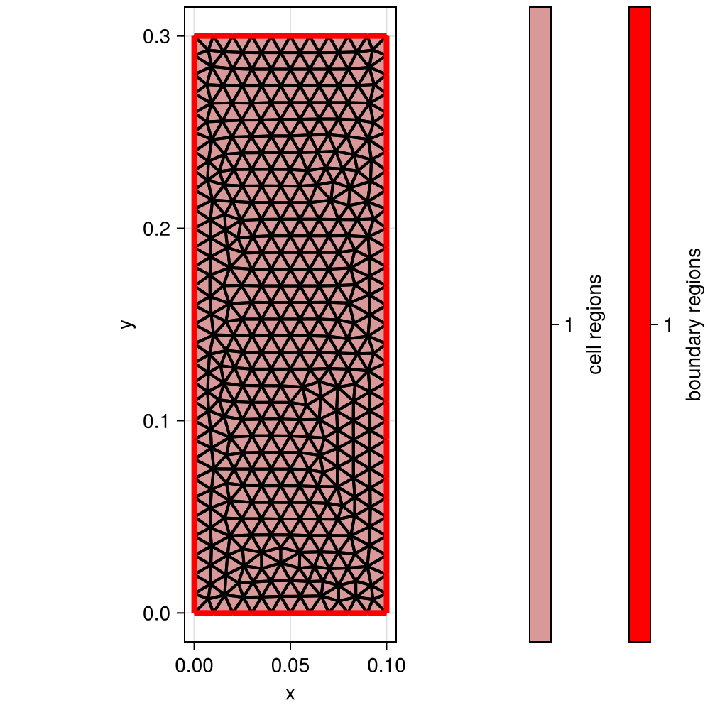
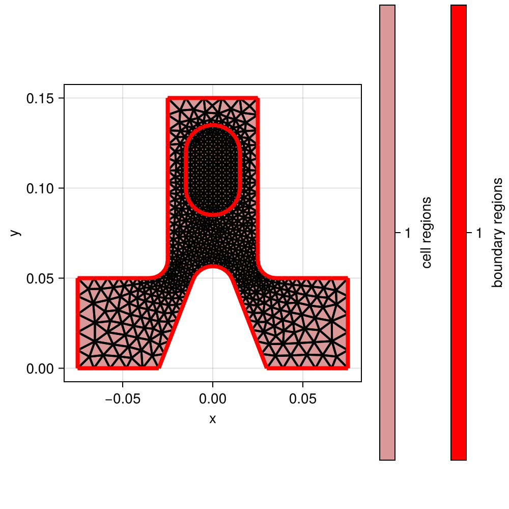
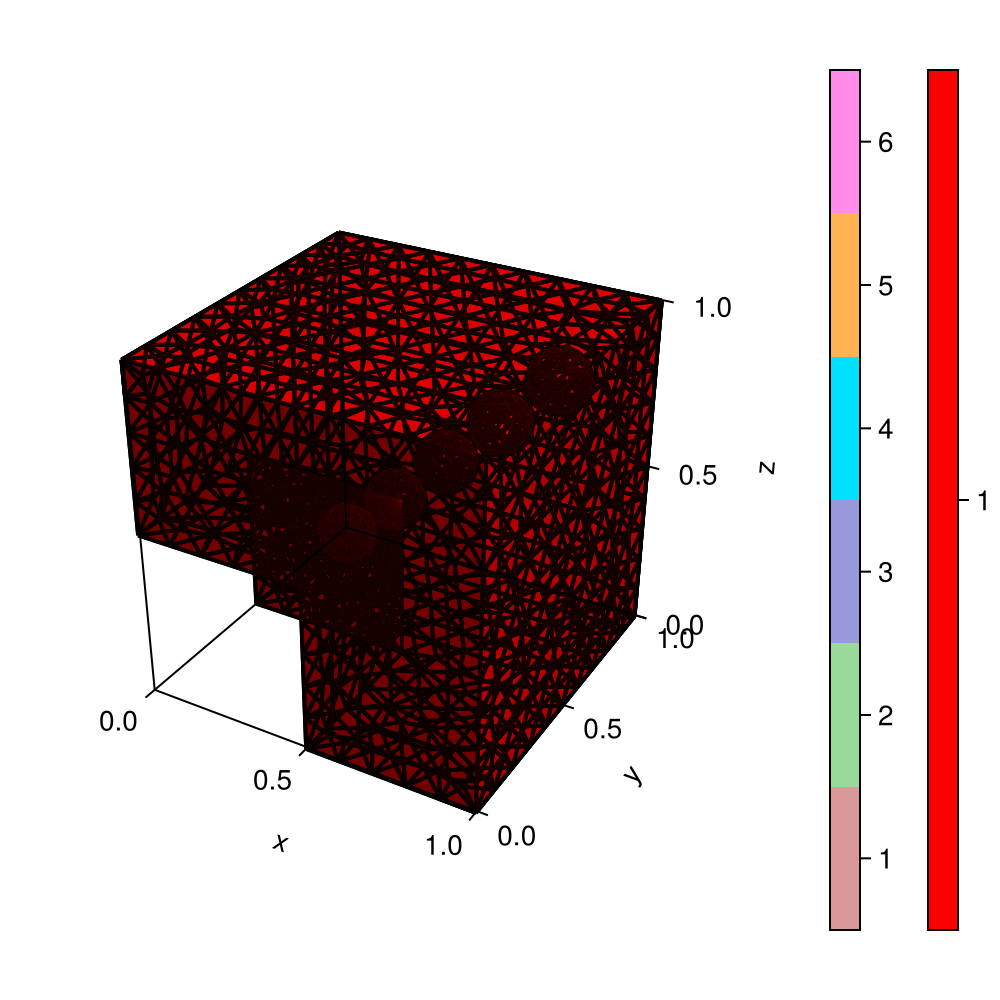

Gmsh examples
using ExtendableGridsusing Gmsh: gmshExample t1 from the GMSH docs
function gmsh_t1() gmsh.initialize() gmsh.option.setNumber("General.Terminal", 1) gmsh.model.add("t1") lc = 1.0e-2 gmsh.model.geo.addPoint(0, 0, 0, lc, 1) gmsh.model.geo.addPoint(0.1, 0, 0, lc, 2) gmsh.model.geo.addPoint(0.1, 0.3, 0, lc, 3) p4 = gmsh.model.geo.addPoint(0, 0.3, 0, lc) gmsh.model.geo.addLine(1, 2, 1) gmsh.model.geo.addLine(3, 2, 2) gmsh.model.geo.addLine(3, p4, 3) gmsh.model.geo.addLine(4, 1, p4) gmsh.model.geo.addCurveLoop([4, 1, -2, 3], 1) gmsh.model.geo.addPlaneSurface([1], 1) gmsh.model.geo.synchronize() gmsh.model.addPhysicalGroup(0, [1, 2], 1) gmsh.model.addPhysicalGroup(1, [1, 2], 2) gmsh.model.addPhysicalGroup(2, [1], 6) gmsh.model.setPhysicalName(2, 6, "My surface") gmsh.model.mesh.generate(2) grid = ExtendableGrids.simplexgrid_from_gmsh(gmsh.model) gmsh.finalize() return gridend
Example t4 from the GMSH docs
function gmsh_t4() gmsh.initialize() gmsh.model.add("t4") cm = 1.0e-2 e1 = 4.5 * cm; e2 = 6 * cm / 2; e3 = 5 * cm / 2 h1 = 5 * cm; h2 = 10 * cm; h3 = 5 * cm; h4 = 2 * cm; h5 = 4.5 * cm R1 = 1 * cm; R2 = 1.5 * cm; r = 1 * cm Lc1 = 0.01 Lc2 = 0.003 function hypot(a, b) return sqrt(a * a + b * b) end ccos = (-h5 * R1 + e2 * hypot(h5, hypot(e2, R1))) / (h5 * h5 + e2 * e2) ssin = sqrt(1 - ccos * ccos) factory = gmsh.model.geo factory.addPoint(-e1 - e2, 0, 0, Lc1, 1) factory.addPoint(-e1 - e2, h1, 0, Lc1, 2) factory.addPoint(-e3 - r, h1, 0, Lc2, 3) factory.addPoint(-e3 - r, h1 + r, 0, Lc2, 4) factory.addPoint(-e3, h1 + r, 0, Lc2, 5) factory.addPoint(-e3, h1 + h2, 0, Lc1, 6) factory.addPoint(e3, h1 + h2, 0, Lc1, 7) factory.addPoint(e3, h1 + r, 0, Lc2, 8) factory.addPoint(e3 + r, h1 + r, 0, Lc2, 9) factory.addPoint(e3 + r, h1, 0, Lc2, 10) factory.addPoint(e1 + e2, h1, 0, Lc1, 11) factory.addPoint(e1 + e2, 0, 0, Lc1, 12) factory.addPoint(e2, 0, 0, Lc1, 13) factory.addPoint(R1 / ssin, h5 + R1 * ccos, 0, Lc2, 14) factory.addPoint(0, h5, 0, Lc2, 15) factory.addPoint(-R1 / ssin, h5 + R1 * ccos, 0, Lc2, 16) factory.addPoint(-e2, 0.0, 0, Lc1, 17) factory.addPoint(-R2, h1 + h3, 0, Lc2, 18) factory.addPoint(-R2, h1 + h3 + h4, 0, Lc2, 19) factory.addPoint(0, h1 + h3 + h4, 0, Lc2, 20) factory.addPoint(R2, h1 + h3 + h4, 0, Lc2, 21) factory.addPoint(R2, h1 + h3, 0, Lc2, 22) factory.addPoint(0, h1 + h3, 0, Lc2, 23) factory.addPoint(0, h1 + h3 + h4 + R2, 0, Lc2, 24) factory.addPoint(0, h1 + h3 - R2, 0, Lc2, 25) factory.addLine(1, 17, 1) factory.addLine(17, 16, 2) factory.addCircleArc(14, 15, 16, 3) factory.addLine(14, 13, 4) factory.addLine(13, 12, 5) factory.addLine(12, 11, 6) factory.addLine(11, 10, 7) factory.addCircleArc(8, 9, 10, 8) factory.addLine(8, 7, 9) factory.addLine(7, 6, 10) factory.addLine(6, 5, 11) factory.addCircleArc(3, 4, 5, 12) factory.addLine(3, 2, 13) factory.addLine(2, 1, 14) factory.addLine(18, 19, 15) factory.addCircleArc(21, 20, 24, 16) factory.addCircleArc(24, 20, 19, 17) factory.addCircleArc(18, 23, 25, 18) factory.addCircleArc(25, 23, 22, 19) factory.addLine(21, 22, 20) factory.addCurveLoop([17, -15, 18, 19, -20, 16], 21) factory.addPlaneSurface([21], 22) factory.addCurveLoop([11, -12, 13, 14, 1, 2, -3, 4, 5, 6, 7, -8, 9, 10], 23) factory.addPlaneSurface([23, 21], 24) factory.synchronize() v = gmsh.view.add("comments") gmsh.view.addListDataString(v, [10, -10], ["Created with Gmsh"]) gmsh.view.addListDataString( v, [0, 0.11, 0], ["Hole"], ["Align", "Center", "Font", "Helvetica"] ) gmsh.view.addListDataString( v, [0, 0.09, 0], ["file://../t4_image.png@0.01x0"], ["Align", "Center"] ) gmsh.view.addListDataString( v, [-0.01, 0.09, 0], ["file://../t4_image.png@0.01x0,0,0,1,0,1,0"] ) gmsh.view.addListDataString( v, [0, 0.12, 0], ["file://../t4_image.png@0.01x0#"], ["Align", "Center"] ) gmsh.view.addListDataString(v, [150, -7], ["file://../t4_image.png@20x0"]) gmsh.view.option.setString( v, "DoubleClickedCommand", "Printf('View[0] has been double-clicked!');" ) gmsh.option.setString( "Geometry.DoubleClickedLineCommand", "Printf('Curve %g has been double-clicked!', Geometry.DoubleClickedEntityTag);" ) gmsh.model.setColor([(2, 22)], 127, 127, 127) gmsh.model.setColor([(2, 24)], 160, 32, 240) gmsh.model.setColor([(1, i) for i in 1:14], 255, 0, 0) gmsh.model.setColor([(1, i) for i in 15:20], 255, 255, 0) gmsh.model.mesh.generate(2) grid = ExtendableGrids.simplexgrid_from_gmsh(gmsh.model) gmsh.finalize() return gridend
Example t5 from the GMSH docs
function gmsh_t5() gmsh.initialize() gmsh.model.add("t5") lcar1 = 0.1 lcar2 = 0.0005 lcar3 = 0.055 gmsh.model.geo.addPoint(0.5, 0.5, 0.5, lcar2, 1) gmsh.model.geo.addPoint(0.5, 0.5, 0, lcar1, 2) gmsh.model.geo.addPoint(0, 0.5, 0.5, lcar1, 3) gmsh.model.geo.addPoint(0, 0, 0.5, lcar1, 4) gmsh.model.geo.addPoint(0.5, 0, 0.5, lcar1, 5) gmsh.model.geo.addPoint(0.5, 0, 0, lcar1, 6) gmsh.model.geo.addPoint(0, 0.5, 0, lcar1, 7) gmsh.model.geo.addPoint(0, 1, 0, lcar1, 8) gmsh.model.geo.addPoint(1, 1, 0, lcar1, 9) gmsh.model.geo.addPoint(0, 0, 1, lcar1, 10) gmsh.model.geo.addPoint(0, 1, 1, lcar1, 11) gmsh.model.geo.addPoint(1, 1, 1, lcar1, 12) gmsh.model.geo.addPoint(1, 0, 1, lcar1, 13) gmsh.model.geo.addPoint(1, 0, 0, lcar1, 14) gmsh.model.geo.addLine(8, 9, 1); gmsh.model.geo.addLine(9, 12, 2) gmsh.model.geo.addLine(12, 11, 3); gmsh.model.geo.addLine(11, 8, 4) gmsh.model.geo.addLine(9, 14, 5); gmsh.model.geo.addLine(14, 13, 6) gmsh.model.geo.addLine(13, 12, 7); gmsh.model.geo.addLine(11, 10, 8) gmsh.model.geo.addLine(10, 13, 9); gmsh.model.geo.addLine(10, 4, 10) gmsh.model.geo.addLine(4, 5, 11); gmsh.model.geo.addLine(5, 6, 12) gmsh.model.geo.addLine(6, 2, 13); gmsh.model.geo.addLine(2, 1, 14) gmsh.model.geo.addLine(1, 3, 15); gmsh.model.geo.addLine(3, 7, 16) gmsh.model.geo.addLine(7, 2, 17); gmsh.model.geo.addLine(3, 4, 18) gmsh.model.geo.addLine(5, 1, 19); gmsh.model.geo.addLine(7, 8, 20) gmsh.model.geo.addLine(6, 14, 21) gmsh.model.geo.addCurveLoop([-11, -19, -15, -18], 22) gmsh.model.geo.addPlaneSurface([22], 23) gmsh.model.geo.addCurveLoop([16, 17, 14, 15], 24) gmsh.model.geo.addPlaneSurface([24], 25) gmsh.model.geo.addCurveLoop([-17, 20, 1, 5, -21, 13], 26) gmsh.model.geo.addPlaneSurface([26], 27) gmsh.model.geo.addCurveLoop([-4, -1, -2, -3], 28) gmsh.model.geo.addPlaneSurface([28], 29) gmsh.model.geo.addCurveLoop([-7, 2, -5, -6], 30) gmsh.model.geo.addPlaneSurface([30], 31) gmsh.model.geo.addCurveLoop([6, -9, 10, 11, 12, 21], 32) gmsh.model.geo.addPlaneSurface([32], 33) gmsh.model.geo.addCurveLoop([7, 3, 8, 9], 34) gmsh.model.geo.addPlaneSurface([34], 35) gmsh.model.geo.addCurveLoop([-10, 18, -16, -20, 4, -8], 36) gmsh.model.geo.addPlaneSurface([36], 37) gmsh.model.geo.addCurveLoop([-14, -13, -12, 19], 38) gmsh.model.geo.addPlaneSurface([38], 39) shells = [] sl = gmsh.model.geo.addSurfaceLoop([35, 31, 29, 37, 33, 23, 39, 25, 27]) push!(shells, sl) function cheeseHole(x, y, z, r, lc, shells) p1 = gmsh.model.geo.addPoint(x, y, z, lc) p2 = gmsh.model.geo.addPoint(x + r, y, z, lc) p3 = gmsh.model.geo.addPoint(x, y + r, z, lc) p4 = gmsh.model.geo.addPoint(x, y, z + r, lc) p5 = gmsh.model.geo.addPoint(x - r, y, z, lc) p6 = gmsh.model.geo.addPoint(x, y - r, z, lc) p7 = gmsh.model.geo.addPoint(x, y, z - r, lc) c1 = gmsh.model.geo.addCircleArc(p2, p1, p7) c2 = gmsh.model.geo.addCircleArc(p7, p1, p5) c3 = gmsh.model.geo.addCircleArc(p5, p1, p4) c4 = gmsh.model.geo.addCircleArc(p4, p1, p2) c5 = gmsh.model.geo.addCircleArc(p2, p1, p3) c6 = gmsh.model.geo.addCircleArc(p3, p1, p5) c7 = gmsh.model.geo.addCircleArc(p5, p1, p6) c8 = gmsh.model.geo.addCircleArc(p6, p1, p2) c9 = gmsh.model.geo.addCircleArc(p7, p1, p3) c10 = gmsh.model.geo.addCircleArc(p3, p1, p4) c11 = gmsh.model.geo.addCircleArc(p4, p1, p6) c12 = gmsh.model.geo.addCircleArc(p6, p1, p7) l1 = gmsh.model.geo.addCurveLoop([c5, c10, c4]) l2 = gmsh.model.geo.addCurveLoop([c9, -c5, c1]) l3 = gmsh.model.geo.addCurveLoop([c12, -c8, -c1]) l4 = gmsh.model.geo.addCurveLoop([c8, -c4, c11]) l5 = gmsh.model.geo.addCurveLoop([-c10, c6, c3]) l6 = gmsh.model.geo.addCurveLoop([-c11, -c3, c7]) l7 = gmsh.model.geo.addCurveLoop([-c2, -c7, -c12]) l8 = gmsh.model.geo.addCurveLoop([-c6, -c9, c2]) s1 = gmsh.model.geo.addSurfaceFilling([l1]) s2 = gmsh.model.geo.addSurfaceFilling([l2]) s3 = gmsh.model.geo.addSurfaceFilling([l3]) s4 = gmsh.model.geo.addSurfaceFilling([l4]) s5 = gmsh.model.geo.addSurfaceFilling([l5]) s6 = gmsh.model.geo.addSurfaceFilling([l6]) s7 = gmsh.model.geo.addSurfaceFilling([l7]) s8 = gmsh.model.geo.addSurfaceFilling([l8]) sl = gmsh.model.geo.addSurfaceLoop([s1, s2, s3, s4, s5, s6, s7, s8]) v = gmsh.model.geo.addVolume([sl]) push!(shells, sl) return v end x = 0 y = 0.75; z = 0; r = 0.09 for t in 1:5 x += 0.166 z += 0.166 v = cheeseHole(x, y, z, r, lcar3, shells) gmsh.model.geo.addPhysicalGroup(3, [v], t) end gmsh.model.geo.addVolume(shells, 186) gmsh.model.geo.synchronize() gmsh.model.addPhysicalGroup(3, [186], 10) gmsh.model.mesh.generate(3) grid = ExtendableGrids.simplexgrid_from_gmsh(gmsh.model) gmsh.finalize() return gridend
CI callbacks for ExampleJuggler.jl
Unit tests
using Testfunction runtests() ok(grid) = num_nodes(grid) > 0 && num_cells(grid) > 0 && num_bfaces(grid) > 0 @test ok(gmsh_t1()) @test ok(gmsh_t4()) @test ok(gmsh_t5()) return nothingendPlot generation
using GridVisualizefunction generateplots(picdir; Plotter = nothing) if isdefined(Plotter, :Makie) size = (500, 500) Plotter.save(joinpath(picdir, "gmsh_t1.png"), gridplot(gmsh_t1(); Plotter, size)) Plotter.save(joinpath(picdir, "gmsh_t4.png"), gridplot(gmsh_t4(); Plotter, size)) Plotter.save(joinpath(picdir, "gmsh_t5.png"), gridplot(gmsh_t5(); Plotter, size)) end return nothingendThis page was generated using Literate.jl.